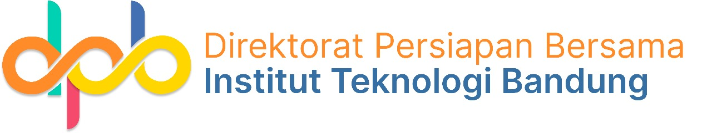

Primary — Sekolah Garuda
Full lockup: garuda mark + wordmark.
Supporting — DPB (mark)
Direktorat Persiapan Bersama (DITSAMA ITB).

Supporting — DPB (full lockup)
Mark + wordmark, for organiser contexts.